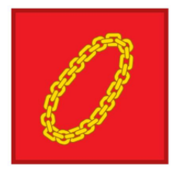

PANCASILA
Ketuhanan Yang Maha Esa

kemanusiaan yang adil dan beradab
persatuan indonesia
Kerakyatan yang dipimpin oleh hikmat kebijaksanaan dalam permusyawaratan/perwakilan
keadilan sosial bagi seluruh rakyat indonesia